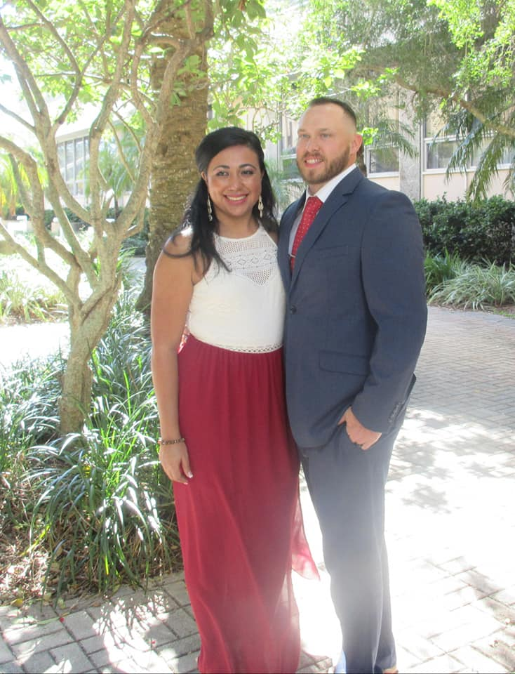
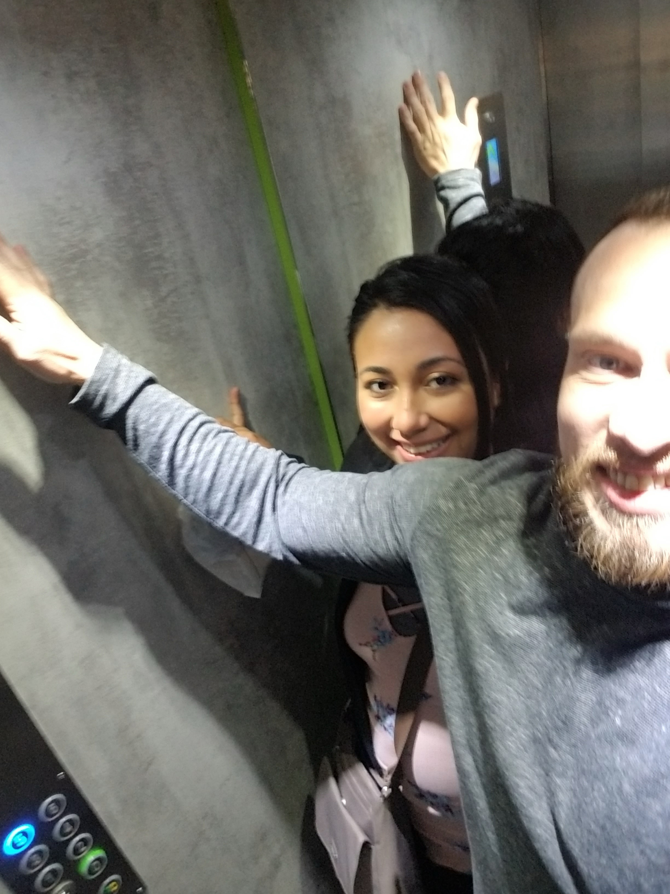
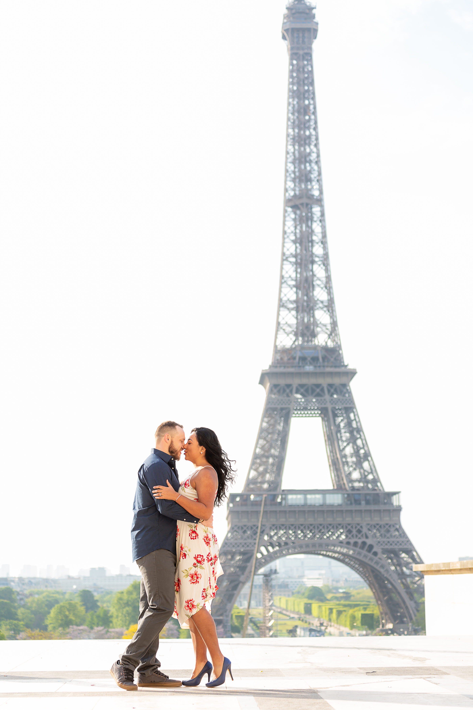
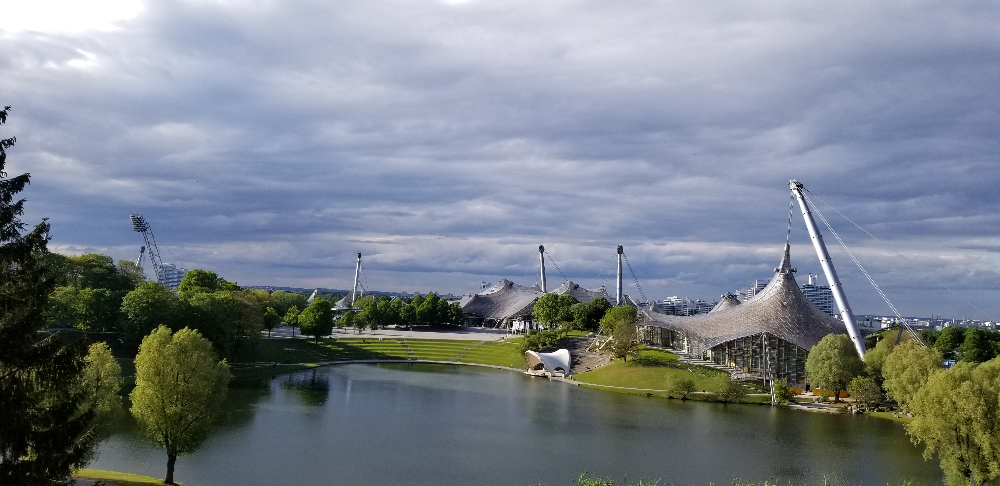
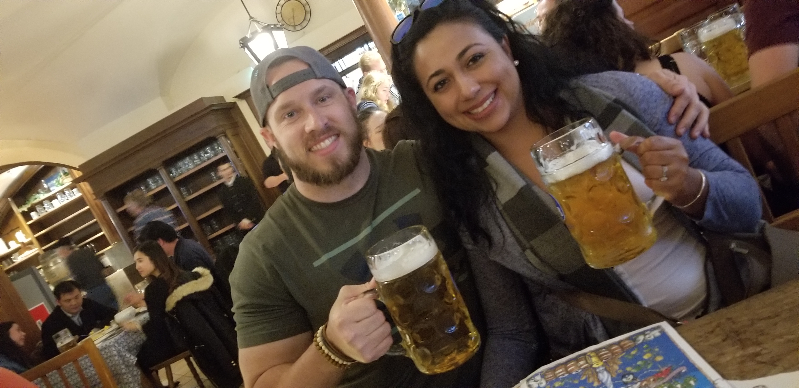
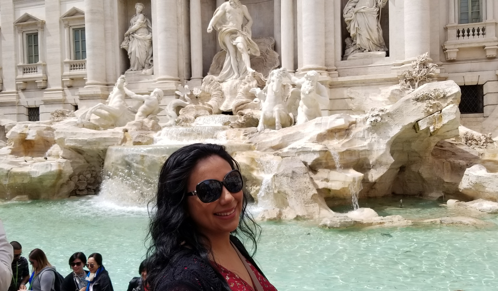
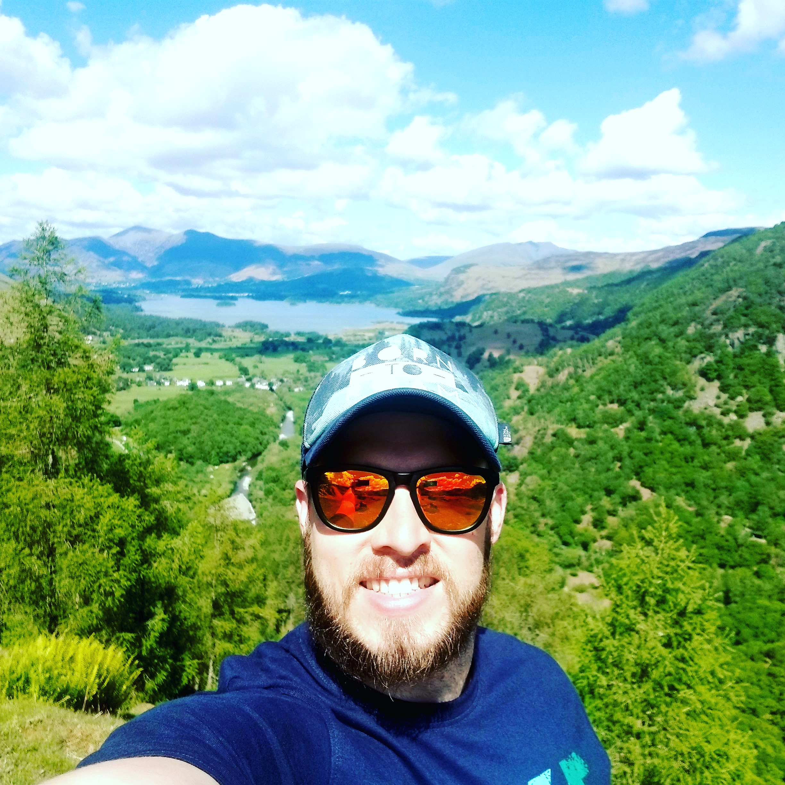
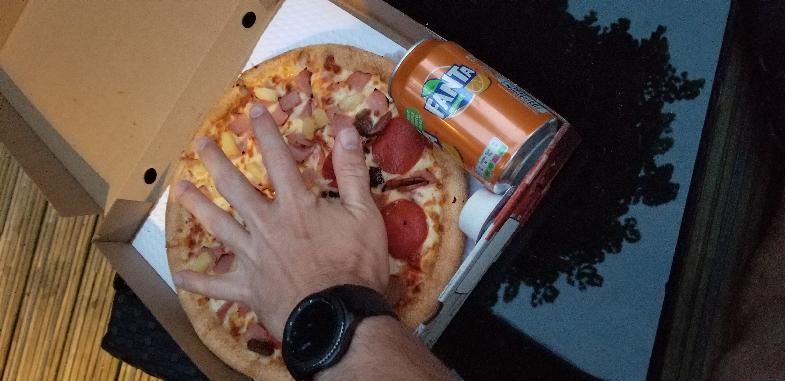
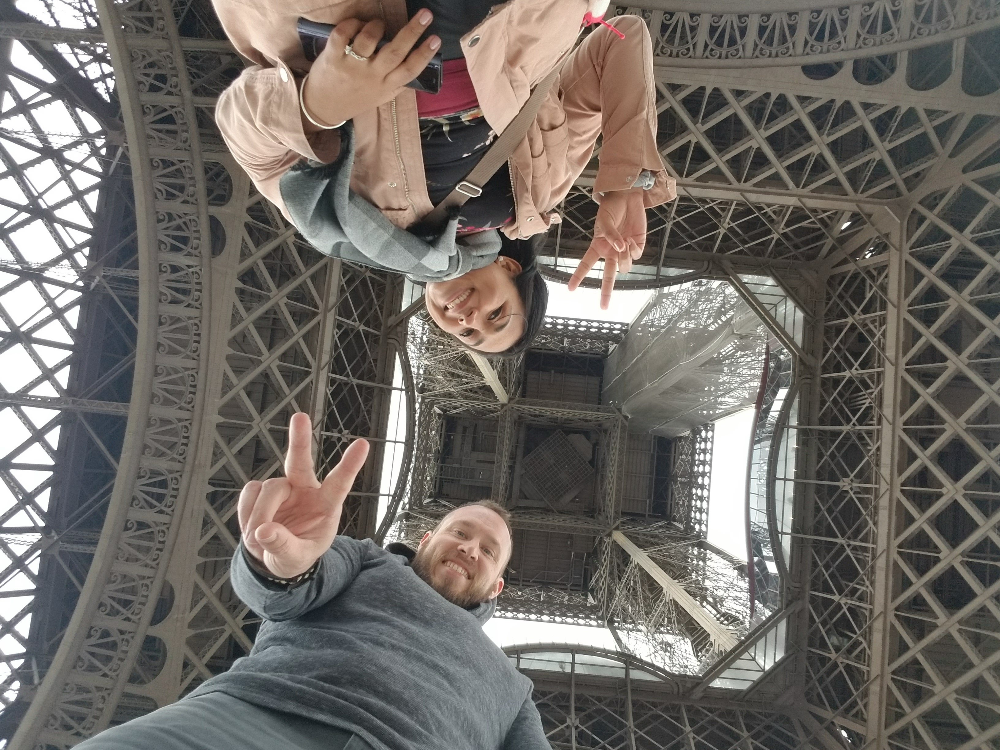

What Wedding?
Some might think, what do you mean by ditching the traditional wedding? This is a puzzling question and was one that took awhile to answer. After my wife and I got engaged we started do the traditional stuff to get ready for the big day! She tired on dresses and actually bought one, which to this day I still have never seen. We did a lot of research online looking at possible venues. We checked out a lot of venues and even brought our parents to check out a few of them. After a rash of friends weddings and months into planning our own, we started talking about alternative locations to have our wedding. We started to figure out what we did and didn't like. We decided we wanted to do something different. We wanted to do something fun or in a unique location. This turned into looking at local breweries and dinner party cruises. After all of the stories from our friends and hearing how most people only go on a weekend honeymoon or maybe a week. We had the wildest idea come to us right before we started to put down a deposit on a location.
What if we didn't have a wedding at all? This question was not taken lightly. We thought were we crazy? What would our friends say? Would our family approve or support our decision? Would we regret not having a real wedding with all of our friends and family around? We obviously had a lot of thoughts and concerns. My soon to be wife was most concerned about how her dad would feel. Never getting that opportunity to walk his little girl down the isle could not go over so well. So we did the only thing we could do and start a conversation with family and friends. So what was the outcome of our deliberations? We decided to get married at the courthouse and go to Europe for 3 weeks instead!!!!!
Wedding day at the courthouse was a nice ceremony! It was a beautiful day in November. Very simple with a few family members and friends.She did not wear her wedding dress if you missed that above instead she wore this beautiful dress. She did say "I DO", so I would consider that a successful wedding! It was short and sweet and just like that we were married and committed to going to Europe.
The trip of a lifetime with my new bride was upon us. With our wedding over and planning not yet started. We had a lot to get done before May. Planning a trip might not seem like a lot of work at first but planning for 24 days of travel requires a lot of work. Coordinating flights, trains, hotels, and tourist sites can be quite daunting. We decided to just have a general outline of what were the things we wanted to do and the things we have to do. This way we had flexibility in our trip. We didn't really plan each day out and more or less went with the flow.
London
Landing in London was exciting,this was our first time in Europe. We were tired from the overnight flight but it was morning time in London and we were there for only a night before heading to Paris and wanted to make the most of it. We spend most of the day walking around. We checked into our least desirable location of the trip. A private room at a hostel which was our first experience ever staying in a hostel and could result in the last. The reviews were decent but the accommodations were terrible. The floors were so dusty it looked like they hadn't been swept in months if ever. One of the beds looked like someone slept in it and the sheets were never changed and the supposed cable well that cord was literally cut. We considered checking out and paying for another place to stay but the cheapest thing we found was around €120 or $150 USD and we were 2 blocks from the train station. So we rode the high of excitement and just stuck it out. We did visit our first pub that night and had a pint! The following morning we checked out of our hostel and headed to the train station where we Eurostar train to Paris.

Paris
The train ride was pretty uneventful, especially for traveling under the water for most of it. Once we were out of the water the views of the countryside were spectacular! This was my first official train ride though so that was pretty cool!
Paris what can I say that hasn't already been said about that city. We were there for nearly a week and it didn't disappoint. Our hotel we nice although we did get somewhat of a surprise when entered the elevator. It was quite small and very unexpected. We ventured out and explored the city. We wondered around the neighborhood we were in for awhile just trying to get our bearings straight. We found some markets, plenty of bakery's and our dinner spot for the night. Oh the pastry's and how Paris ruined desserts in America!

We spent our days exploring the city and I believe we averaged the most walking miles in Paris which was are 12- 14 a day! We took a bus tour around the city to get our bearing straight! We ended up going to the Arc de Triomphe de l'Étoile, the Louver, Luxembourg Gardens, the Panthéon. It was a surprise to see how small the Mona Lisa was. We walked all over the city and went shopping down the famous Avenue des Champs Elysées because why not! We did also setup a professional photoshoot around the Eiffel Tower and the pictures came out amazing!
München
We actually struggled trying to find a place to visit in Germany. There are so many interesting cities to visit, that it was hard to just pick one. We settled on Munich as it had a great nightlife scene and plenty of attractions. My wife did not really want to go to Germany as she didn't think she would really like it or enjoy the food. So we only took the time to have two full days there and was the shortest stop along our trip. Surprise surprise it ended up being one of my wifes favorite places during the trip and she ended up loving the Bavarian food.
We Ubered around town which was pretty cool and packed in as much site seeing we could handle in the short amount of time. We visited a former concentration camp Dachau and learned about what went on there. Dachau was the longest running camp and lasted nearly 12 years where a total of 41,500 people lost their lives. To visit a place where so many perished not that long ago and were being treated as subpar human beings just because of their religion.The only words I can use to describe it is unforgettable.
We needed an uplift after after visiting the camp. We visited FC Bayern Munich's Stadium and got a private tour. It was really cool to hang out in the locker room and the media area. We visited Olympiapark where the 1972 summer Olympics were held. It was a beautiful park and very large. Almost directly across the highway was the BMW museum and that was also a must for me.
We couldn't go to Munich and leave out one the the most important aspects, the BEER! I don't know what it is but the beer just seems to taste better there. We got our fill that's for sure. We had a nice bar just down the street from our hotel and made our first stop there for lunch. The famous hofbräuhaus was only a 5ish minute walk as well. That place was amazing and really tied in some of that German culture. It was really and I mean really loud and festive. I would say one of my favorite experiences during the trip. Everyone sits at these long benches and you have to find your own spot to sit. This means being forced to interact with other people. There is no assigned seating, and we sat across from a very nice Swiss couple and had some cool conversation. Thats one of the great things about Germany, most people speak English! We are determined to go back very soon for Oktoberfest noch ein Bier, bitte!!! 
Rome
Next stop was Italy! Oh the architecture and food was amazing. Italy more specifically Rome, was actually our least favorite place on the trip. It was the only place we were not really able to feel comfortable. It seemed like we always had to be on guard. We did explore a lot of Rome, we visited Trevi Fountain, the Colosseum. We found our favorite restaurant which was reservation only we found out the first night we tried to go. We ended up going to dinner twice there during our trip. The food everywhere was so good and very cheap.

We decided to get out of the city and took a day trip to Tuscany to go to a wine vineyard. The trip had a couple of stops along the way. We went by the scene where the Gladiator was filmed and stopped in a town where a scene that Twilight was filmed in a very small city. We also stopped at a temple where monks used to live. The best part was the wine tasting of course. This included a full lunch with you guessed it cheese and prosciutto. One thing we took away from Italy is that we would love to go back and found out that we enjoyed going to the small towns more than the big cities.
England
With our trip coming to a close we headed back to London. We had about 6 days left before our trip would be over. When did the touristy things and explored the city. We stay in a couple different locations to get really get a feel the the city. Our first hotel was in the financial district which was much more upscale. Boy did we notice the price difference one we got back to London from Italy which was the cheapest places we stayed on the trip. I had to get fish and chips again because well were in London!
We did something else that became one of my favorite parts of the trip. I rented a car, an Audio A5 to be specific and drove all the way up to norther England to the Lake District located in Keswick. I really enjoyed driving on the wrong side of the road, especially in such a fun car. The old small winding roads you see in the movies are super fun to drive on. We stayed in a nice B and B. Our main go for this trip was getting out of the city and getting into nature in a completely different country. We went hiking for about 4 hours and had lunch at one of the summits. The time away from the city was great for us to slow down some at the end of the trip, which was definitely much needed.
After two days of northern England we headed back to London to finish on the trip. We stayed in more of a neighborhood for the final few nights. The hotel was made out of some old townhouses in between others. We actually walked past it the first time because it looked just like all the rest of townhouses in the neighborhood. There was some great local food, but the restaurants were much harder to come by because of the more suburban area. We had been used to going to places within walking distance which were all over the place before. Now we have to walk for 10 plus minutes to find one. I did find the smallest large pizza I have ever had and if I remember correctly it cost around 15 Euros.
Final Thoughts
Whew, that was a lot to cover on our trip! I was eventually time to head back home, always the worse part. We had the one of the most memorable trips one could ever have. Looking back we don't regret it for one minute. When we tell people about it, we usually get the same reaction from most people. That is amazing and a really cool idea. Which is usually proceeded by their wedding and how it went so fast that they didn't really get to enjoy it as much as they wanted too. We have now suggested to ditch the traditional wedding and go on a trip of a lifetime instead! To learn more about any of the places we have been, use the learn more dropdown menu at the top!
